<!doctype html>
<html lang="it">
<head>
<meta charset="utf-8">
<meta name="viewport" content="width=device-width, initial-scale=1">
<title>TV · Proposta A · La lavagna</title>
<link rel="stylesheet" href="comune.css">
<style>
/* A · LA LAVAGNA. Il workout intero scritto in colonne, come sulla lavagna
   del box; il timer è una fascia sopra. Le colonne (da 1 a 4) e la grandezza
   dei caratteri le sceglie adattaColonne: tutto lo spazio, mai fuori. */
#tela{padding:40px 52px 44px;display:flex;flex-direction:column;gap:30px}

.fascia{height:178px;flex-shrink:0;display:flex;align-items:center;gap:44px;padding:0 48px 0 56px;border-radius:40px;position:relative;overflow:hidden;
  background:var(--carta);box-shadow:var(--ombra);border:3px solid color-mix(in srgb,var(--c) 55%,transparent)}
.fascia .riempi{position:absolute;inset:0 auto 0 0;background:var(--c);opacity:.14;transition:width 1s linear}
.fascia .titolo{position:relative;flex:1;min-width:0;display:flex;flex-direction:column;gap:8px}
.fascia .fase{font-size:36px;font-weight:800;color:var(--c);display:flex;align-items:center;gap:16px}
.fascia .fase .pausa{display:inline-flex;align-items:center;gap:10px;font-size:26px;padding:4px 18px;border-radius:99px;background:rgba(255,255,255,.1);color:#e5e7eb}
.fascia .compito{font-size:66px;font-weight:900;letter-spacing:-.035em;line-height:1;white-space:nowrap;overflow:hidden;text-overflow:ellipsis}
.fascia .compito small{font-size:40px;font-weight:700;color:var(--testo2);margin-left:18px}
.fascia .poi{font-size:30px;font-weight:700;color:#9ca3af}
.fascia .poi b{color:var(--muted);margin-right:12px}
.fascia .cifre{position:relative;font-size:178px;font-weight:900;letter-spacing:-.055em;line-height:1}
.fascia .cifre.ferme{color:rgba(255,255,255,.4)}
.fascia .lato{position:relative;display:flex;flex-direction:column;align-items:flex-end;gap:18px}

.testa{display:flex;align-items:baseline;gap:24px;flex-shrink:0;height:52px}
.testa h1{font-size:46px;font-weight:900;letter-spacing:-.03em;color:#fff}
.testa small{font-size:30px;font-weight:700}
.testa .destra{margin-left:auto;display:flex;align-items:center;gap:28px;align-self:center}
.testa .controlli span{width:58px;height:58px;font-size:26px}

.lavagna{flex:1}
</style>
</head>
<body>
<div id="tela"></div>
<script src="comune.js"></script>
<script>
window.disegna = (s) => {
  const { w, passo } = s
  const f = testoFase(s)
  return `
  <div class="testa">
    <h1>${w.titolo}</h1><small style="color:${coloreIntensita(w.intensita)}">Intensità ${w.intensita}/10</small>
    <div class="destra">
      <div class="controlli"><span class="audio">${icona('audio')}</span><span>${icona('ruota')}</span></div></div>
  </div>
  <div class="fascia" style="--c:${f.colore}">
    <span class="riempi" style="width:${(s.avanzamento ?? 0) * 100}%"></span>
    <div class="titolo">
      <span class="fase">${f.testo}${s.inPausa ? `<span class="pausa">${icona('pausa')} In pausa</span>` : ''}</span>
      <span class="compito">${passo.compito}${passo.spec ? `<small>${passo.spec}</small>` : ''}</span>
      ${passo.poi ? `<span class="poi"><b>Poi</b>${passo.poi}</span>` : ''}
    </div>
    <span class="cifre num ${s.inPausa ? 'ferme' : ''}">${passo.fine ? '✓' : s.tempo}</span>
  </div>
  <div class="lavagna" id="lavagna"></div>`
}
window.dopo = () => lavagna(document.getElementById('lavagna'), TV.stato())
TV.avvia()
</script>
</body>
</html>
